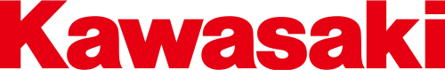
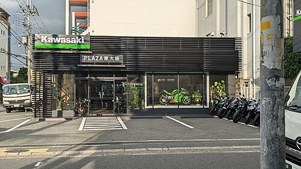

Kawasaki Motors, Ltd. (カワサキモータース株式会社, Kawasaki Mōtāsu Kabushikigaisha) is a Japanese mobility manufacturer that produces motorcycles, all-terrain vehicles, utility vehicles, watercraft, outboard motors, and other electric products. It derives its origins from Kawasaki Aircraft Industries, a subsidiary of Kawasaki Heavy Industries, and is rooted in the motorcycle, boat, and engine businesses. In 1953, they began manufacturing engines for motorcycles and have since produced products such as the Mach and Ninja series in motorcycles and the Jet Ski, which has become a generic term for personal watercraft. Until 2021, it was a division of Kawasaki Heavy Industries, known as the Kawasaki Aerospace Company (川策重工業汎用機カンパニー) and later the Kawasaki Motorcycle & Engine Company (川崎重工業モーターサイクル&エンジンカンパニー). In 2021, it was separated as Kawasaki Motors, Ltd, a wholly owned subsidiary of Kawasaki Heavy Industries.

History
Kawasaki Aircraft initially manufactured motorcycles under the Meguro name, having bought an ailing motorcycle manufacturer, Meguro Manufacturing with whom they had been in partnership. This eventually became Kawasaki Motor Sales. Some early motorcycles display an emblem with "Kawasaki Aircraft" on the fuel tank.
During 1962, Kawasaki engineers were developing a four-stroke engine for small cars. Then some of the engineers transferred to the Meguro factory to work on the Meguro K1 and the SG, a single cylinder 250 cc OHV. In 1963, Kawasaki and Meguro merged to form Kawasaki Motorcycle Co., Ltd. From 1962 through 1967, Kawasaki motorcycles used an emblem which can be described as a flag within a wing.
Work continued on the Meguro K1, a copy of the BSA A7 500 cc vertical twin and on the W1. The K2 was exported to the U.S. for a test in response to the expanding American market for four-stroke motorcycles. At first it was rejected for a lack of power. By the mid-1960s, Kawasaki was finally exporting a moderate number of motorcycles. The Kawasaki H1 Mach III in 1968, along with several enduro-styled motorcycles to compete with Yamaha, Suzuki and Honda, increased sales of Kawasaki units.
1974 saw the establishment of a Kawasaki assembly facility in Lincoln, Nebraska, US, named the American Kawasaki Motors Corporation (KMC), to complete Japan-produced components into finished motorcycles for the North American market.
Kawasaki's engines division, housed in a single office complex in Grand Rapids, Michigan, consolidates research and development projects for engines.

Motorcycles
Kawasaki's Aircraft Company began the development of a motorcycle engine in 1949. The development was completed in 1952 and mass production started in 1953.[10] The engine was an air-cooled, 148 cc, OHV, four-stroke single cylinder with a maximum power of 4 PS (2.9 kW; 3.9 hp) at 4,000 rpm. In 1954, the first complete Kawasaki Motorcycle was produced under the name of Meihatsu, a subsidiary of Kawasaki Aircraft. In 1960, Kawasaki completed construction of a factory dedicated exclusively to motorcycle production and bought Meguro Motorcycles.